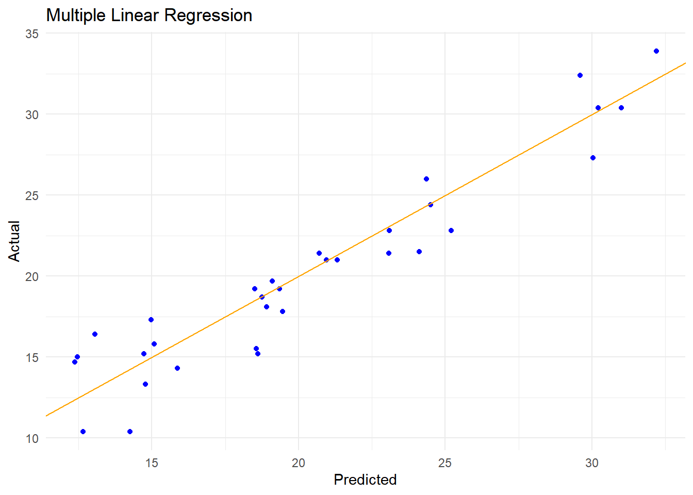

Chapter 4 Multiple Linear Regression
4.1 Description
An approach for predicting a dependent (response) value \(Y\) based on multiple independent (predictor) values \(X_1, X_2, X_3, ..., X_n\), given that there is some proportional linear relationship between the predictor values and the response value. That is, assuming that one unit of change in any predictor value results in a consistent change (increase or decrease) in the response value.
\[ Y \approx \beta_0 + \beta_1X_1 + \beta_2X_2 + ... + \beta_nX_n + \epsilon\]
In this equation, just like for simple linear regression, \(\beta_0\) represents a constant offset (the intercept) and \(\beta_i\) represents the average amount \(Y\) changes for each change in \(X_i\) (the slope for that predictor) while holding all other predictor variables fixed.
4.2 How it Works
Multiple Linear Regression behaves similarly to Simple Linear Regression, with the exception that instead of representing the fit via a 2-dimensional line, the dimensionality of the fit is one greater than the number of predictors. For example, the two-predictor case can be represented as a plane through a three-dimensional grid with \(Y\), \(X_1\), and \(X_2\) axes. The slopes and intercept for a multi-dimensional fit can be calculated similar to the Simple Linear model, but the math is apparently gnarly enough that ISLR declined to include it.
4.3 Evaluating Validity
Instead of the t-statistic or p-value, the applicability of a Multiple Linear Regression model can be evaluated using the F-statistic, which can be calculated for n observations and p predictors as:
\[ \begin{align} RSS & = \sum_{i=1}^n{(y_i - \hat{y}_i)^2} \\ & = \sum_{i=1}^2{(y_1 - \beta_0 - \beta_1X_1 - \beta_2X_2 - \ ... \ - \beta_nX_n)} \\ TSS & = \sum_{i=1}^n{(y_i - \bar{y})^2} \\ F & = \frac{(TSS - RSS)/p}{RSS/(n - p - 1)} \end{align} \]
If the assumptions of a linear model are correct, then:
\[E\{RSS/(n - p - 1)\} = \sigma^2\]
If the null hypothesis is true, that is all the slopes of the model are 0, then:
\[E\{(TSS - RSS)/p\} = \sigma^2\]
So, if there is no relationship between the response and predictors, we would expect the
F-statistic to be near 1, since \(\frac{\sigma^2}{\sigma^2} = 1\). On the other hand, if
there is some relationship between the response and predictors, we expect the numerator
of the F-statistic to be greater than \(\sigma^2\), making \(F\) greater than 1. How large
\(F\) needs to be to indicate the applicability of the model is dependent on the size of
n and p. When the number of observations is large, then a smaller \(F\) can indicate
the relationship. The p-value can be calculated from \(F\) for a given n and p, as
well as for each predictor variable. These values are reported by the base R lm model,
which can handle multiple linear regression. The code looks like:
set.seed(1337)
x1 <- c(1, 2, 3, 4, 5, 6, 7, 8, 9, 10)
x2 <- c(1, 3, 5, 7, 11, 13, 17, 23, 29, 31)
y <- 5 + 2*x1 + 0.33*x2 + runif(10, -0.5, 0.5)
fit <- lm(y ~ x1 + x2)
summary(fit)##
## Call:
## lm(formula = y ~ x1 + x2)
##
## Residuals:
## Min 1Q Median 3Q Max
## -0.39015 -0.10268 -0.04461 0.09799 0.51006
##
## Coefficients:
## Estimate Std. Error t value Pr(>|t|)
## (Intercept) 4.85564 0.29322 16.560 7.15e-07 ***
## x1 2.08968 0.15838 13.194 3.36e-06 ***
## x2 0.29789 0.04474 6.659 0.000288 ***
## ---
## Signif. codes: 0 '***' 0.001 '**' 0.01 '*' 0.05 '.' 0.1 ' ' 1
##
## Residual standard error: 0.2669 on 7 degrees of freedom
## Multiple R-squared: 0.9994, Adjusted R-squared: 0.9992
## F-statistic: 5681 on 2 and 7 DF, p-value: 5.79e-12#> Call:
#> lm(formula = y ~ x1 + x2)
#>
#> Residuals:
#> Min 1Q Median 3Q Max
#> -0.39015 -0.10268 -0.04461 0.09799 0.51006
#>
#> Coefficients:
#> Estimate Std. Error t value Pr(>|t|)
#> (Intercept) 4.85564 0.29322 16.560 7.15e-07 ***
#> x1 2.08968 0.15838 13.194 3.36e-06 ***
#> x2 0.29789 0.04474 6.659 0.000288 ***
#> ---
#> Signif. codes: 0 ‘***’ 0.001 ‘**’ 0.01 ‘*’ 0.05 ‘.’ 0.1 ‘ ’ 1
#>
#> Residual standard error: 0.2669 on 7 degrees of freedom
#> Multiple R-squared: 0.9994, Adjusted R-squared: 0.9992
#> F-statistic: 5681 on 2 and 7 DF, p-value: 5.79e-12Here we see a larger p-value for x1 compared to x2, which makes sense given that
the slope for x2 is smaller. The overall p-value is also quite small and \(F\) is
quite large, indicating that the response and predictors do have a relationship. Compare
that to:
y <- runif(10, 0, 40) # random values
fit <- lm(y ~ x1 + x2)
summary(fit)##
## Call:
## lm(formula = y ~ x1 + x2)
##
## Residuals:
## Min 1Q Median 3Q Max
## -19.8573 -8.3492 0.6098 11.5581 19.5387
##
## Coefficients:
## Estimate Std. Error t value Pr(>|t|)
## (Intercept) 45.729 17.386 2.630 0.0339 *
## x1 -7.257 9.391 -0.773 0.4649
## x2 1.437 2.653 0.542 0.6048
## ---
## Signif. codes: 0 '***' 0.001 '**' 0.01 '*' 0.05 '.' 0.1 ' ' 1
##
## Residual standard error: 15.82 on 7 degrees of freedom
## Multiple R-squared: 0.22, Adjusted R-squared: -0.002895
## F-statistic: 0.987 on 2 and 7 DF, p-value: 0.4192#> Call:
#> lm(formula = y ~ x1 + x2)
#>
#> Residuals:
#> Min 1Q Median 3Q Max
#> -19.8573 -8.3492 0.6098 11.5581 19.5387
#>
#> Coefficients:
#> Estimate Std. Error t value Pr(>|t|)
#> (Intercept) 45.729 17.386 2.630 0.0339 *
#> x1 -7.257 9.391 -0.773 0.4649
#> x2 1.437 2.653 0.542 0.6048
#> ---
#> Signif. codes: 0 ‘***’ 0.001 ‘**’ 0.01 ‘*’ 0.05 ‘.’ 0.1 ‘ ’ 1
#>
#> Residual standard error: 15.82 on 7 degrees of freedom
#> Multiple R-squared: 0.22, Adjusted R-squared: -0.002895
#> F-statistic: 0.987 on 2 and 7 DF, p-value: 0.4192Here, the overall p-value is rather large, and \(F\) is very nearly 1, indicating (as we
suspect) that y cannot be predicted by x1 and x2.
4.4 Identifying Important Predictors
Even after determining that a group of predictors can accurately (to some degree) be
used to model the behavior of the response value, it is entirely possible (even likely)
that some predictors are more influential than others. Some predictors may even be
superfluous. By removing predictors whose explanatory power is weak, the model can be
refined and the model interpretation can be sharpened. For example, if we determine that
weight, horsepower, and engine displacement all affect the MPG we can expect from a
vehicle, and we want to improve fuel efficiency, then in the real world it is beneficial
to determine which inputs have the biggest impact on the output so that we can focus our
attention on those significant inputs. One can start by examining the individual
p-values reported by the model, but recall that these p-values where calculated when
all predictors were modeled. Adding or removing predictors may change the p-values
for any or all of the remaining predictors (perhaps there are interaction effects not
accounted for). One can imagine several strategies for selecting predictors, however,
this approach is not recommended (or supported) in tidymodels. Instead, various
regularization approaches are provided which penalize (or reduce the contributions
of) less important variables. These methods will be covered in more detail in a later
chapter.
4.5 Evaluating Fit
RSE and \(R^2\) can be computed and interpreted the same as for Simple Linear models . For Multiple Linear Regression, \(R^2\) equals \(Cor(Y,\hat{Y})^2\), which is the square of the correlation between the response variable and the predicted response variable. It is important to note that adding more predictor variables to the model will always increase \(R^2\), even if those predictor variables are only weakly associated with the response. This is due to over-fitting. Care should be taken when adding additional predictor variables to the model to ensure that each is substantially contributing to the fit. This can be assessed by observing the effect on RSE and \(R^2\) of adding or removing a particular predictor. If the impact is minimal, that predictor is likely unnecessary. RSE in particular can help evaluate this, as the RSE can increase slightly if the additional predictor variables only have a small impact on RSS (residual sum of squares).
4.6 Example
Now that we have an underpinning for the way multiple predictor variables impact the
linear regression approach, we can explore the tidymodels workflow for this approach.
We can add exploratory data analysis steps to suss out any complicating issues
(discussed in Considerations).
4.6.2 Tidymodels Workflow
set.seed(1234)
# Note, we're still not splitting the dataset here, for the sake of
# comparison to the Simple Linear Regression example.
# Pre-process the data using a recipe
# Note, this is slightly different than the example from Chapter 2,
# here we add interaction terms for the many interactions observed.
(multiple_linear_regression_recipe
<- recipe(mpg ~ disp + hp + drat + wt + qsec,
data = mtcars)
|> step_log(disp, hp)
|> step_interact(
terms = ~ disp:hp +
disp:drat +
disp:wt +
hp:wt +
hp:qsec +
drat:wt)
)## Recipe
##
## Inputs:
##
## role #variables
## outcome 1
## predictor 5
##
## Operations:
##
## Log transformation on disp, hp
## Interactions with disp:hp + disp:drat + disp:wt + hp:wt + hp:qsec + drat:wt# Setup up the model
(multiple_linear_regression_model
<- linear_reg()
|> set_engine("lm")
|> set_mode("regression"))## Linear Regression Model Specification (regression)
##
## Computational engine: lm# Bundle the recipe and model into a workflow, fit the model
(multiple_linear_regression_workflow
<- workflow()
|> add_recipe(multiple_linear_regression_recipe)
|> add_model(multiple_linear_regression_model)
|> fit(data = training(mtcars_split)))## ══ Workflow [trained] ═══════════════════════════════════════════════════════════════════════════════
## Preprocessor: Recipe
## Model: linear_reg()
##
## ── Preprocessor ─────────────────────────────────────────────────────────────────────────────────────
## 2 Recipe Steps
##
## • step_log()
## • step_interact()
##
## ── Model ────────────────────────────────────────────────────────────────────────────────────────────
##
## Call:
## stats::lm(formula = ..y ~ ., data = data)
##
## Coefficients:
## (Intercept) disp hp drat wt qsec disp_x_hp
## 9.8223 -5.0773 9.2242 21.5371 -26.5927 1.5736 1.9581
## disp_x_drat disp_x_wt hp_x_wt hp_x_qsec drat_x_wt
## -6.8414 6.9204 -6.4707 -0.2865 5.1099# Add predictions to training data
multiple_linear_regression_predictions <- augment(
multiple_linear_regression_workflow,
mtcars
)
# Check performance
(metrics(multiple_linear_regression_predictions, mpg, .pred))## # A tibble: 3 × 3
## .metric .estimator .estimate
## <chr> <chr> <dbl>
## 1 rmse standard 1.91
## 2 rsq standard 0.899
## 3 mae standard 1.54# It is often helpful to visualze results like this, comparing the
# actual values to the predicted values of the response variable.
(multiple_linear_regression_predictions
|> ggplot(aes(x = .pred, y = mpg))
+ geom_point(color = "blue")
+ geom_abline(intercept = 0, slope = 1, color = "orange")
+ labs(title = "Multiple Linear Regression", x = "Predicted", y = "Actual")
+ theme_minimal())
Looking at the performance metrics, we can see that the estimated fit of the multiple linear regression has a better estimated \(R^2\) than the simple linear regression model from Chapter 3. We shouldn’t be too overconfident here, though, adding additional variables always increases \(R^2\). The visualization reveals a good fit, as well. For real data, this test of performance would be conducted against a testing set, which we will see in future examples.
4.7 Considerations
4.7.1 Not Just Combining Simple Models
When multiple predictor values are present, the Multiple Linear Regression model is vastly preferred over combining or averaging multiple Simple Linear Regression fits, as the Multiple Linear Regression may reveal interaction effects that will be masked by multiple Simple Linear Regression fits. This makes intuitive sense, as we can imagine real-life scenarios in which correlated observations are not necessarily related directly, but may have a single cause (i.e., increased ice cream sales do not cause an increase in shark attacks).
4.7.2 Qualitative Variables
Qualitative predictor variables (aka categories, or factors) can be used as predictor
variables as well, they simple need to be converted into quantitative dummy variables,
where presence or absence of a category is denoted by a 1 or 0 in the column,
respectively. In practice, this process is handled by R’s formula syntax and is not
something that must be considered, beyond ensuring that qualitative variables are
encoded as factors and not strings.
4.7.3 Predictor Interactions
It is possible that each unit change in one predictor variable can impact not just the
response variable but also the slope for another predictor variable. An example is the
number of tools and the number of workers on the rate of production in some factory
setting. It seems clear that both input variables are connected in some way, since an
abundance of workers with very few pieces of equipment would produce a totally different
output than a moderate number of both. These interaction effects can be accounted for by
adding an interaction column to the data set (multiplying the two values together) or by
adding interaction terms to the formula specification in R. For example,
units ~ workers + equipment + workers:equipment,
units ~ workers + equipment + workers*equipment, and units ~ workers*equipment are
all equivalent and different spellings of the formula that includes contributions by
workers, equipment, and the interaction between the two.
4.7.4 Polynomial Regression
There are times when the relationship between a predictor and response is not a straight
line, but can be described by a curve. In these cases, polynomial regression can be
employed. One strategy to deal with this is to include powers of the predictor variables
as additional predictors. For example, using the mtcars data set, it may be that mpg
and horsepower have a quadratic relationship. This could be modeled by
\[mpg = \beta_0 + (\beta_1 \times horsepower) + (\beta_2 \times horsepower^2) + \epsilon\]
Where the square of horsepower is included as a predictor. This allows for the same
linear regression to fit a curved line. The user should be careful to not over-use
polynomials, however, as this is a potential source of over-fitting.
4.7.5 Potential Issues
4.7.5.1 Non-linearity of response-predictor relationships
If the relationship between the response and predictors is truly not linear, then a linear regression model cannot be properly fit to the data. This issue can be diagnosed using a residual plot. When plotting the residuals vs the predicted response values, there should be no discernible pattern. If there is an observable pattern, then it indicates a systematic mis-fit of the model to the response. At times, this can be corrected by applying non-linear transformations to predictors such as \(\log{X}\), \(\sqrt{X}\), or \(X^2\).
4.7.5.2 Correlation of error terms
Linear regression models assume that the error inherent in each measurement is independent. If this assumption is violated, then the model may overestimate the calculated confidence interval (i.e., indicate narrower confidence and prediction intervals than would reflect reality). This can easily occur with time series data, where sequential measurements are captured close in time. If the error terms are correlated, then the residuals from fitting this kind of data may demonstrate an phenomenon known as tracking, where adjacent residuals may have similar values. In these cases, linear regression may not be the right choice.
4.7.5.3 Non-constant variance of error terms
Linear regression models assume that the error terms have constant variance, that is, they fall within the same distribution and limits for each response measurement. A non-constant variance could be expressed if the error ranges become larger at larger response values, for example. This is called heteroscedasticity. It can be observed in residual plots as well, often as a “funnel” shape. It can be corrected by applying a “concave” transformation to one or more predictors, such as \(\log{X}\) or \(\sqrt{X}\). Another option, especially if you have a good idea as to the variance for each response, is to use observation weights, with weights proportional to the inverse variance.
4.7.5.6 Collinearity
When two (or more) predictor variables are highly correlated, they are said to be collinear. This can reduce the accuracy of the regression coefficients, and can even result in a failure to reject the null hypothesis in significant cases. This can be detected by calculating the variance inflation factor (VIF) for each predictor variable. A value that exceeds 5 or 10 can indicate a problem. When predictors have been identified as collinear, the situation can be remedied by either (a) dropping all but one of the predictors or (b) combining the collinear variables into a single predictor (by taking the average or multiplying them together).